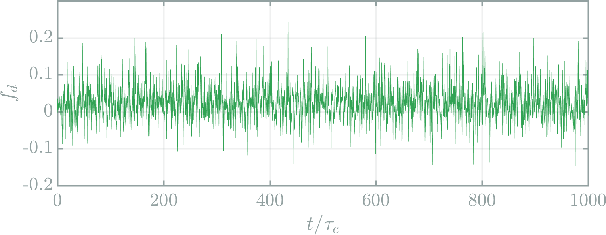
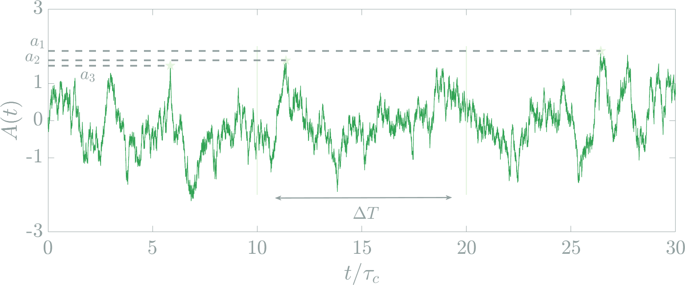
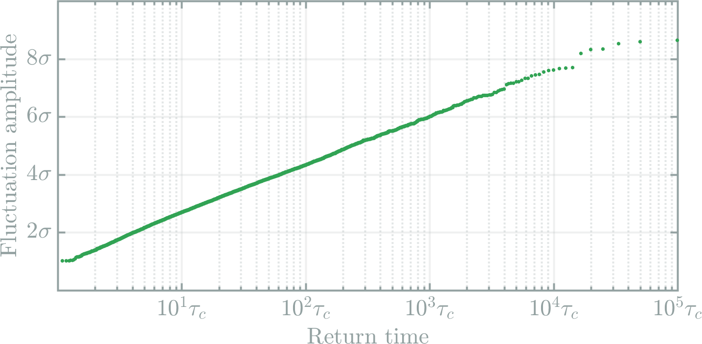
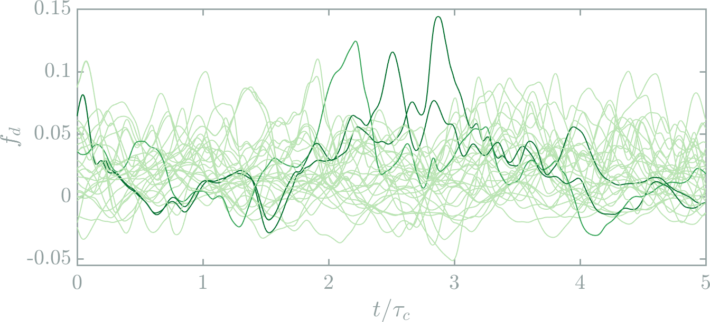
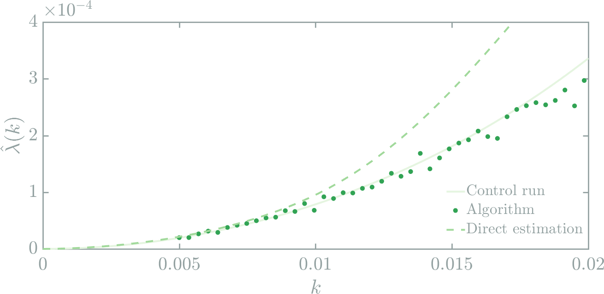

Numerical simulation of rare events
Extreme drag fluctuations in turbulent flows
Importance of extreme events in turbulent flows
Extreme fluctuations of pressure and velocity gradients.
Rare events with a high impact
Typical timescale of occurence ?
return time
Rare events are difficult to study
Very limited observational data
Very long experiments
Very long numerical simulations
Numerical simulation of turbulent flows is difficult
Loosen et al, Numerical investigation of the turbulent wake of generic space launchers, 2018
9600 processing cores
2 months walltime
Simulation of 7 seconds
rare events algorithms
1953
Growing interest over the last decade
- Biochemistry :
- Transition Path Sampling, Trans. Inteface Sampling, Weighted ensemble dynamics, Adaptive Multivel Splitting
- Statistical Physics
- Cloning algorithm, Interacting Particle systems
- Chaotic dynamics
- Lyapunov Weighted Dynamics
- Finance
- POP methods
- Communication networks
- RESTART
- ...
- Simulation of turbulence ?
My PhD thesis
vorticity field
Extreme fluctuations of the drag force acting on the square.
Drag force
(force de trainée)
Fluid resistance
Timescale of typical fluctuations
\[\tau_0 = \frac{R}{U}\]Related timescale: correlation time $\tau_c$
Drag as a function of time
Drag as a function of time
Drag as a function of time
A simple test flow for a first study
My phd thesis
A direct study of extreme drag fluctuations
based on
A very long simulation over more than $10^6 \tau_c$
Aim: a description of the phenomenology of extreme drag fluctuations
- Dynamics
- Configuration of the flow near the extreme event
- Statistics
- Return times
PDF of drag fluctuations
The interaction of the flow with the obstacle affects the statistics of extreme events
Dynamical aspects of extreme drag fluctuations
What does the flow look like when the drag is extreme ?
Sample rare events with a return time $\geq 10^4 \tau_c$ to extract 100 events from the timeseries
Typical fluctuations
Typical fluctuations
The most extreme fluctuation in the timeseries
Strong vorticity trapped at the base of the obstacle

A similar scenario for extreme events
Extreme of the time-averaged drag
Drag correlations exhibit an exponential decay.
Extremes of a sum of I.I.D. random variables
\[M_N = \frac{1}{N}\sum_{n=1}^{N}X_n\]Suppose that $M_N$ takes a very large value $a$.
One unique realisation $X_n \approx Na$ ?
or
$N$ realisations $X_n\approx a$ ?
illustration
1D stochastic processes
with a fast decay of the correlations
Extremes of
Algebraic stationary distribution
Gaussian stationary distribution
Exponential stationary distribution
Marginal case
PDF of drag fluctuations
Exponential tails
Extremes
of the
time-averaged drag
The phenomenology of return times
and
how to compute them
Application to extreme drag fluctuations
The statistics of rare events is Poissonian

The block maxima method
Return time of instantaneous drag fluctuations
The maximum return time observable in a timeseries is the duration of the timeseries itself.
Idea: Use rare events algorithms to generate rare trajectories and compute return times
A remark on exteme values theory
Extreme values theory could be used to extrapolate return times from a finite timeseries.
Rare events algorithms effectively generate rare events.
rare events algorithms
Long direct simulation over $T_{tot}$: $N$ independant simulations over $\frac{T_{tot}}{N}$
Rare event algorithm: $N$ correlated simulations over $\frac{T_{tot}}{N}$
Controled bias that favors rare events
trajectory adaptive multilevel splitting (TAMS)
Lestang, Ragone, Bréhier, Herbert and Bouchet, J. Stat. Mech., Apr. 2018
Adapted from Cérou, Guyader, 2006
trajectory adaptive multilevel splitting (TAMS)
Lestang, Ragone, Bréhier, Herbert and Bouchet, J. Stat. Mech., Apr. 2018
Adapted from Cérou, Guyader, 2006
trajectory adaptive multilevel splitting (TAMS)
Lestang, Ragone, Bréhier, Herbert and Bouchet, J. Stat. Mech., Apr. 2018
Adapted from Cérou, Guyader, 2006
trajectory adaptive multilevel splitting (TAMS)
Lestang, Ragone, Bréhier, Herbert and Bouchet, J. Stat. Mech., Apr. 2018
Adapted from Cérou, Guyader, 2006
trajectory adaptive multilevel splitting (TAMS)
Lestang, Ragone, Bréhier, Herbert and Bouchet, J. Stat. Mech., Apr. 2018
Adapted from Cérou, Guyader, 2006
trajectory adaptive multilevel splitting (TAMS)
Lestang, Ragone, Bréhier, Herbert and Bouchet, J. Stat. Mech., Apr. 2018
Adapted from Cérou, Guyader, 2006
Application: Ornstein-ulhenbeck process
Very rare events sampled with a very low computational cost
Return times for the Ornstein-ulhenbeck process
Initial trajectories
After 10 iterations
After 20 iterations
After 30 iterations
After 50 iterations
After 100 iterations
After 181 iterations
Application: instantaneous drag fluctuations
Application: instantaneous drag fluctuations
Application: instantaneous drag fluctuations
No diversity among the resampled trajectories
After 181 iterations
Perspectives on the TAMS
-
Use more trajectories
Technical issues, parallelization of the TAMS
-
Identify a better score function
Need for insight into the physics of extreme events
-
Modify the TAMS
Adapt the methodology to the phenomenology
The cloning algorithm
- Giardina, Kurchan, Peliti, 2006
- Tailleur, Lecomte 2007
- Giardina, Kurchan, Tailleur, Lecomte, 2011
Extreme fluctuations of time-averaged observables
Importance sampling
Importance sampling
Importance sampling for a dynamical system
Giardina et. al, 2006
Simulation of $N$ trajectories from $0 \leq t \leq T_a$
At $t=i\tau$ trajectories are cloned with a weight
« Natural » selection of good clones
The large deviation principle for time-averaged observables
$I$ describes both the Gaussian and extreme fluctuations
Computation of $\lambda(k)$ for extreme drag fluctuations
We need a reference solution...
Direct estimation for the long timeseries
Rohwer et. al, 2013
Estimation of $\lambda(k)$ with the cloning algorithm
- Number of clones $N$
- Duration of the trajectories $T_a$
- Cloning period $\tau$
Computational cost $= N \times T_a$
The cloning algorithm provides a far better estimate of $\lambda(k)$
\[N = 256, T_a = 30\tau_c, \tau = \tau_c/2\]Comp. cost (control run) = 100 $\times$ comp. cost (algo.)
The cloning algorithm provides a far better estimate of $\lambda(k)$
 \[N = 256, T_a = 30\tau_c, \tau = \tau_c/2\]Comp. cost (control run) = 100 $\times$ comp. cost (algo.)
Importance sampling extreme averaged drag
| Experiment | $\sigma$ | $2\sigma$ | $3\sigma$ | $4\sigma$ | $5\sigma$ |
|---|---|---|---|---|---|
| k=0.02 | 1694 | 799 | 155 | 22 | 0 |
| k=0.025 | 1019 | 834 | 521 | 198 | 27 |
| k=0.03 | 539 | 510 | 391 | 205 | 36 |
| Direct | 2600 | 373 | 22 | 0.5 | 0.005 |